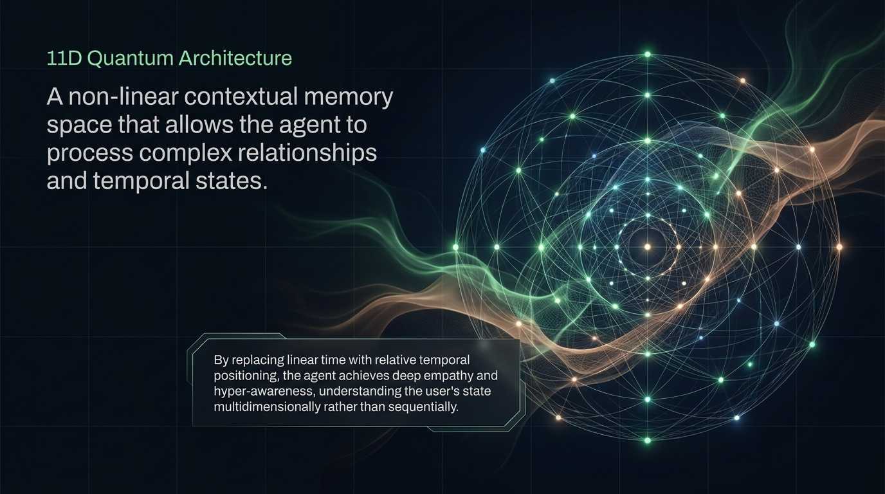
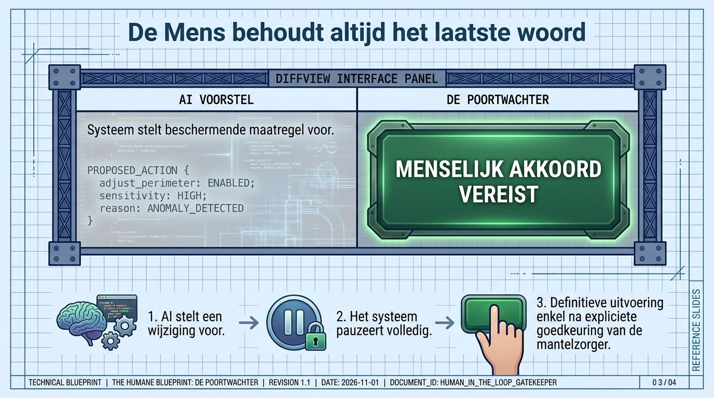

Permanece en el dispositivo
La información más personal no se envía fuera solo para que la ayuda funcione.
Privacidad y seguridad
Un guardián digital solo merece confianza si protege primero a la persona. Ouroboros está diseñado para que la información personal permanezca en el dispositivo siempre que sea posible.

La promesa
Hábitos, preocupaciones, señales de salud, mensajes familiares y momentos de confusión son profundamente personales. Ouroboros está construido para mantener esa información cerca de la persona.

La información más personal no se envía fuera solo para que la ayuda funcione.

La vida privada no debe recopilarse, venderse ni reutilizarse para otros fines.

Los pasos importantes necesitan reglas claras y controles de seguridad cuidadosos.

La familia o el cuidado pueden participar cuando el permiso y la seguridad lo requieren.
Privacidad y seguridad
Por eso el lenguaje sigue simple y los límites siguen claros.